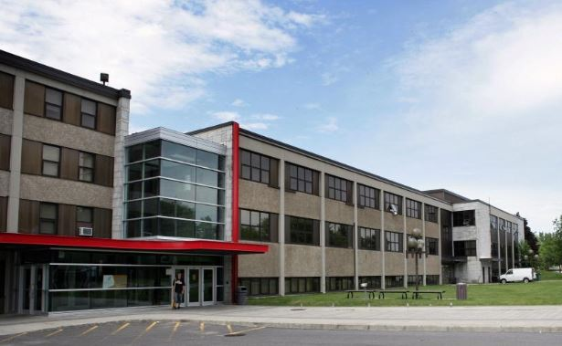

Février 2019 à ce jour Attestation d’études collégiale (A.E.C.)Design et intégration web
Gegep de Trois-Rivières, Trois-Rivières, Quebec, Canada
Août 2000 à Janv. 2002 Diplôme d’études professionnelles (D.E.P.)Dessin de patrons
École des Métiers-des-Faubourgs-de-Montréal, Montréal, Quebec, Canada
1993 à 1996 Techniques Administratives
Option Finance
Collège de Sherbrooke, Sherbrooke, Quebec, Canada
1988 à 1993 Diplôme d’études secondaires
Polyvalente l’Escale, Asbestos, Quebec, Canada
Maman de 3 merveilleux enfants de 8, 14 et 16 ans, également responsable d'un service de garde en milieu familiale depuis bientôt 7 ans. J’ai toujours eu une grande passion pour le dessin, la création ainsi la confection en tout genre. Étant une fille de défis, je me suis inscrite à cette formation afin d'élargir mes horizons et ajouter des cordes à mon arc mais également pour conserver mon mental ainsi mes neuronnes en bonne santé
À 16 ans... Choisir ce que j'allais faire de ma vie entière ? Impossible!! >Trop de choses m'allument, trop de domaines me passionnent
Ne sachant pas trop vers quoi me diriger, j'ai opter pour une une Techniques en administration option finance. Choix guider par ma famille, je devais rester dans les rangs... (secrétaire, compatble ou autre travail de bureau)
Après quelques mois à travailler dans ce dommaine, je me suis rapidement apperçu qu'il manquait de couleur dans mon emploi seule avec mon écran, mon clavier et mes piles de chiffres
Je suis donc retourner sur les banc d'école pour faire ce qui me passionne moi !!! C'est à ce moment que j'ai fait mon D.E.P. en dessin de patrons. J'ai travaillé dans ce domaine environ 7 ans, jusqu'à ce que l'importation prenne le dessus sur la production local et que nos usines de confections ferment leurs portes les unes après les autres. Étant en région je me suis rapidement retrouvé à faire que le contrôle de qualité du "MADE IN BANGDLADESH". L'horreur!!!
Alors, suite à ma dernière grossesse, j'ai décidé d'allier mes passions et mon amour pour les enfants et ainsi, travailler avec les petits êtres qui ont soif d'apprendre. C'est donc à ce moment que j'ai ouvert mon service de garde en milieu familial.
Me voila alors rendu à un tournant où j'aime toujours travailler avec mes petites boules d'amour mais il me manque des défis à reléver...
